BWxD 2018 Presents: Tensions
Tension can be described as the state or condition resulting from opposing applied forces. This definition can be extended to refer to a strained relationship between conflicting ideas, entities, or people. We have chosen the theme of Tensions as an opportunity to reflect upon recent social, political, environmental, and technological challenges and their implications for design practices.
At today’s crossroads, interdisciplinary and collaborative problem-solving is more important than ever. Together, we will consider innovative possibilities for creating personal, local, and global impact, with a focus on counteracting inequality and amplifying historically underrepresented voices. We hope to bring together a diverse community of designers, activists, artists, scientists, writers, scholars, and more to investigate how these different Tensions shape their work and inform their design decisions.
We are excited to share the current speakers that we have confirmed for our upcoming conference! This page will be updated in the following weeks as we continue to build our exciting lineup.
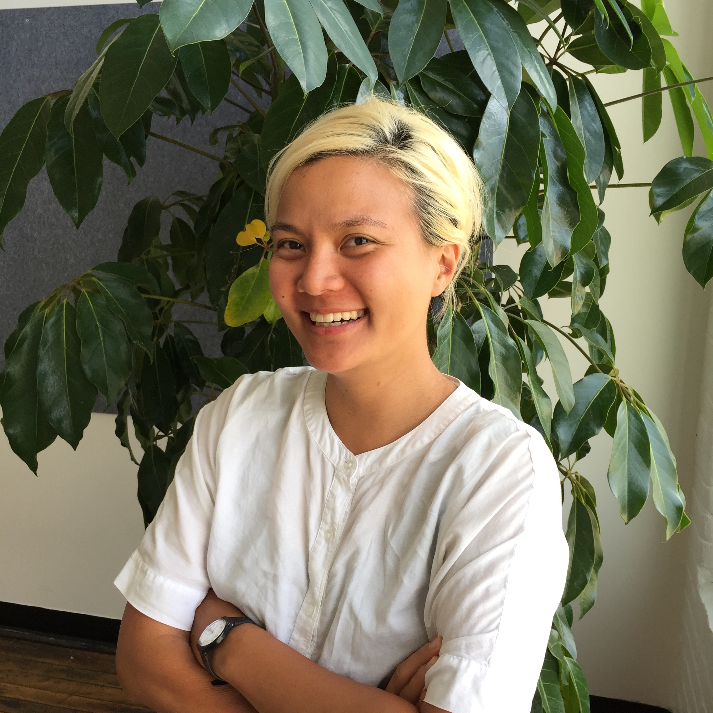

Ayako Maruyama • Design Studio for Social Intervention
Ayako is a Filipina-Japanese who has been working, studying, teaching and biking around in Providence and Boston since 2006. Inspired by living around the world with her family, she focuses on design, urbanism and education towards positive social contributions. She teaches Experience of Public Engagement at RISD and taught The Role of Architecture in Creating a Sense of Place at @bostonu where she completed a Master of City Planning degree. Ayako has been part of the @ds4si based in Boston, MA since 2012.
Ayako's work, focused on community engagement and social justice, includes DS4SI projects like the Social Emergency Response Centers (SERCs) that have occurred in over 20 cities nationally and internationally, as well as leading the production of the @goboston2030 Visioning Lab, an unprecedented public space for Boston residents to express their vision for the City’s 15-year transportation plan. Ayako has cooked for and organized micro-grant community dinners like FeastMass with her friends and also serves on the Board of Directors for GAIA Vaccine Foundation, a non-profit organization based in Providence doing work in Mali towards HIV/ AIDS education, prevention, access to care and vaccination.
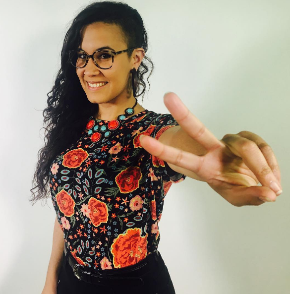
Shey Rivera • AS220
Shey Rivera Ríos is the Artistic Director at AS220, an internationally renowned arts center in Providence, RI, and a multi-genre artist. Their work at AS220 focuses on the role of art and culture as a catalyst for social change through community engagement, cross-sector partnerships, and urban planning.
Rivera has also served on multidisciplinary grant panels for the National Endowment for the Arts, Doris Duke Foundation, National Association of Latino Arts and Cultures, and RISCA - Rhode Island State Council on the Arts.
Kate Lacouture • Garden Time
Kate Lacouture is a landscape architect and garden activist in Providence, RI. She has a bachelor's degree from Yale University and a master's degree from the University of Virginia. Kate's firm, Green Circle Design, specializes in community gardens, school gardens, and prison gardens. She is the Co-founder and Executive Director of Garden Time, Inc. a non-profit that teaches incarcerated men and women to grow food. She lives in Providence with her husband, three sons, and too many backyard chickens.
Emma Bloomfield • High Line Network
Emma Bloomfield is the Director of the High Line Network, a learning community for leaders of open space projects across North America. Founded by Friends of the High Line and currently comprised of leaders from 19 sites, the Network fosters collaboration and knowledge-sharing among leaders so that each of these projects can reach their full potential. Prior to joining Friends of the High Line, Emma was the Director of Learning at a social change consultancy called Purpose, where she led the codification of Purpose’s knowledge around public engagement and launched participatory campaigns around a range of social issues. Emma holds a Bachelor of Arts in Visual and Environmental Studies from Harvard University and a Master of Architecture from Yale University.
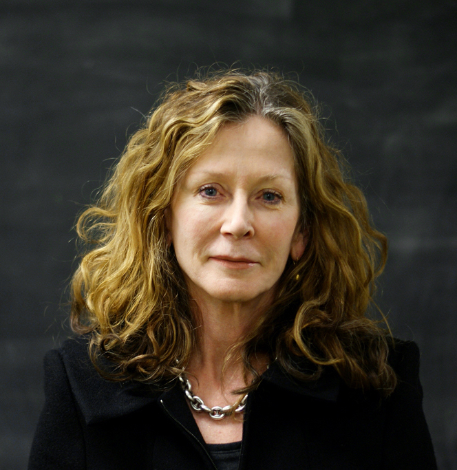
Cheryl Heller • CommonWise
Cheryl Heller is the Founding Chair of the first MFA program in Design for Social Innovation at SVA and President of the design lab CommonWise. She was recently awarded a Rockefeller Bellagio Fellowship, and is a recipient of the prestigious AIGA Medal for her contribution to the field of design. She founded the first design department in a major advertising agency and as president, grew the division to $50m in billings when it was spun off as an independent entity. As a strategist, she has helped grow businesses from small regional enterprises to multi-billion global market leaders, launched category-redefining divisions and products, reinvigorated moribund cultures, and designed strategies for hundreds of successful entrepreneurs. She has taught creativity to leaders and organizations around the world.
Her clients have included Ford Motor Company, American Express, Reebok, Mariott International, Renaissance Hotels, Sheraton, MeadWestvaco, StoraEnso, the Arnhold Institute for Global Health, Medtronic, Pfizer, Mars Corporation, Discovery Networks International, Cemex, Herman Miller, Gap, Bayer Corporation, Seventh Generation, L’Oreal, Elle Magazine, Harper’s Bazaar, The World Wildlife Fund, Ford Foundation, and the Girl Scouts of America.
Heller is the former Board Chair of PopTech, and a Senior Fellow at the Babson Social Innovation Lab. She created the Ideas that Matter program for Sappi in 1999, which has since given over $13 million to designers working for the public good, and partnered with Paul Polak and the Cooper Hewitt National Design Museum to create the exhibit, “Design for the Other 90%.” Her book, The Intergalactic Design Guide, will be published by Island Press in 2018. She is currently working on her Ph.D at RMIT University in Melbourne.
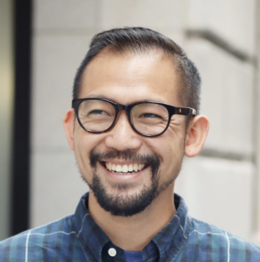
Nicholas Chan • Mount Sinai Health System
Nick is a strategic and service designer from Oakland, California. Currently, he is an experience designer for Mount Sinai Health System. His design experience spans across healthcare (global and domestic), behavioral health, education, tech, and social service sectors. Before entering the world of design, Nick worked as a chef, and started 2 businesses, a visual arts collective, and a bamboo bike company. Most recently, he’s developed bottom-up communication trainings for cities, a roadmap for value-based healthcare, and strategy for design in global health. He's also built 'welcoming' campaigns, communication plans for education initiatives, UX Strategy for an HR impact investment tool, and curriculum for a social R&D collective.
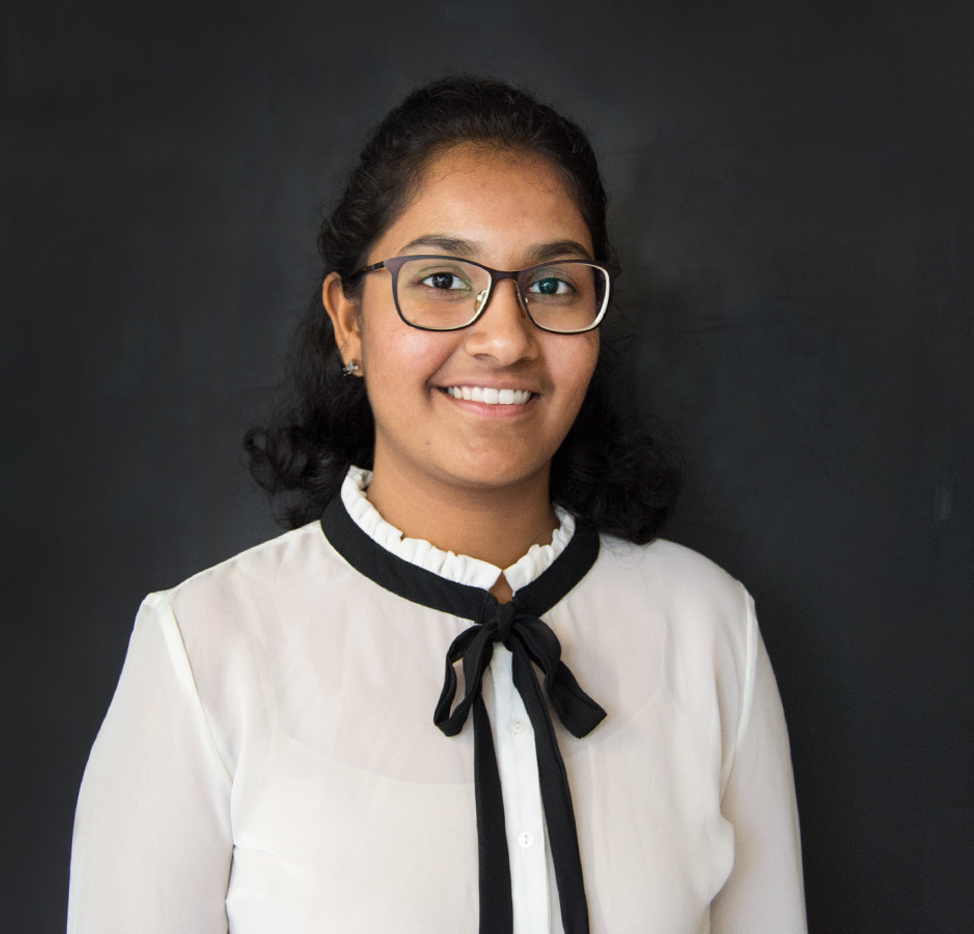
Hrudaya Veena Yanamandala • Memorial Sloan Kettering Cancer Centre
Hrudaya Veena Yanamandala is an Engineer turned Designer from India. With her background in Electronics and Communications Engineering, Hrudaya got interested in designing for new emergent technologies and information and communication access for people in India. This passion got her interested in designing for International Development. After her Bachelors in Engineering, she went onto to pursue Visual Communication Design and Strategic Branding at Srishti Institute of Art, Design and Technology in Bangalore, India, where she was actively involved in designing for education access to migrant children of low income in Karnataka. Hrudaya also holds an MFA in Design for Social Innovation at the School of Visual Arts in New York, where she learnt various design methodologies to solve for complex social problems using the lens of Human Centred design. Her Master’s Thesis concentrated on designing support services for cancer survivors after active treatment. Her work has been in the fields of Healthcare, Education and Social justice. Hrudaya has worked for a wide range of clients like the UN Foundation, Going to School, India, Visit.org, and West Chelsea Energy Alliance in New York. She is currently working in the Strategy and Innovation department at Memorial Sloan Kettering Cancer Centre in New York City and is pursuing research with a multi disciplinary team to improve patient experiences for those diagnosed with Cancer. She is also a Public Access Design Fellow at the Center for Urban Pedagogy. Hrudaya seeks to pursue her passion in designing for Information and Communication technology and its access in Healthcare with the lens of Artificial Intelligence and Machine learning. During her free time, she actively participates in hackathons, conducts design sprints and illustrates. Currently, she is exploring designing with Voice User Interfaces during her free time. She also loves travelling and spending time with her family.
Jessica Mason • The Social Impact Studio
Jessica Mason is Founder & CEO of The Social Impact Studio, a strategic design firm that partners with non-profit, foundation, and government clients to reimagine their strategies, programs, and services and spur social innovation. An entrepreneur, strategist, and designer with deep experience leading innovation ventures in the social and public sector, Jessica is known for bringing keen insight and clarity to complex projects and for championing the value of the creative process for social good. Prior to founding The Studio, Jessica worked at the Center on the Developing Child at Harvard University where she directed a portfolio of social innovation labs and served as the technical expert on innovation methods. She is a certified facilitator and coach of human-centered design, an instructor at the LUMA Institute, an Exec Ed Instructor at Harvard University, and a faculty member at Foster America.
She holds an A.B. Magna Cum Laude from Brown University, an Ed.M in International Education Policy from Harvard Graduate School of Education, and postgraduate certificates in Behavioral Science and International Business Management from the Harvard Kennedy School and Georgetown University, respectively.
Maria Alejandra Sandoval • Dalberg Design
Maria Alejandra (Malé) is a social impact designer from Bogota, Colombia. She is currently a research and strategy designer at Dalberg Design in New York City. As a recent graduate from the MFA Design for Social Innovation (SVA), she started her social impact journey 7 years ago. Here, she worked with youth involved in gangs in Bogotá, assisting them in creating productive life plans through their artistic expressions. She was also part of the project ‘Rio Mio,’ as a design researcher for Los Andes University, where she worked with artisanal gold mining communities in rural Colombia. Here she designed the game 'Mineros' which translates miners' social context into a board game that helped shift decision-making processes and development of new sustainable social practices. Since then, she has helped develop financial inclusion and environmental conservation projects.
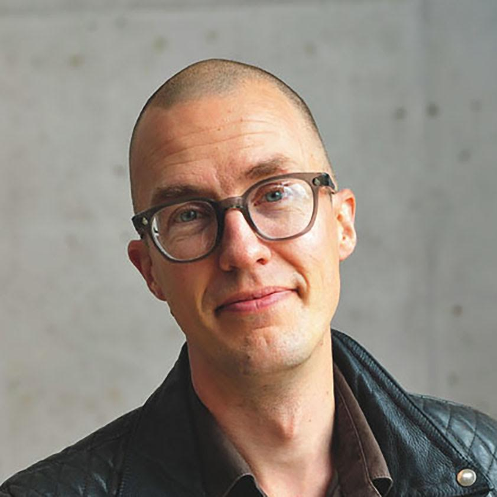
Otto von Busch • Parsons School of Design
Otto von Busch is Associate Professor of Integrated Design at Parsons, The New School for Design. He holds a Ph.D. in design and artistic research from the School of Design and Craft at the University of Gothenburg, Sweden, and has taught and exhibited work on the topic of fashion and empowerment over the last fifteen years. He has a background in arts, craft, design and theory and many of his projects explore how design, and especially fashion, can mobilize community capabilities through collaborative craft and social activism. He has published articles on these topics in The Design Journal, Critical Studies in Fashion and Beauty, Fashion Practice, CoDesign Journal, The Journal of Modern Craft, Textile Cloth and Culture, Craft Research, Organizational Aesthetics, Creative Industries Journal & Journal for Artistic Research. His book chapters on design activism are part of The Routledge Handbook of Sustainable Product Design (2017), The Routledge Companion to Design Research (2015), The Routledge Handbook of Sustainability and Fashion (2014), as well as other design anthologies.
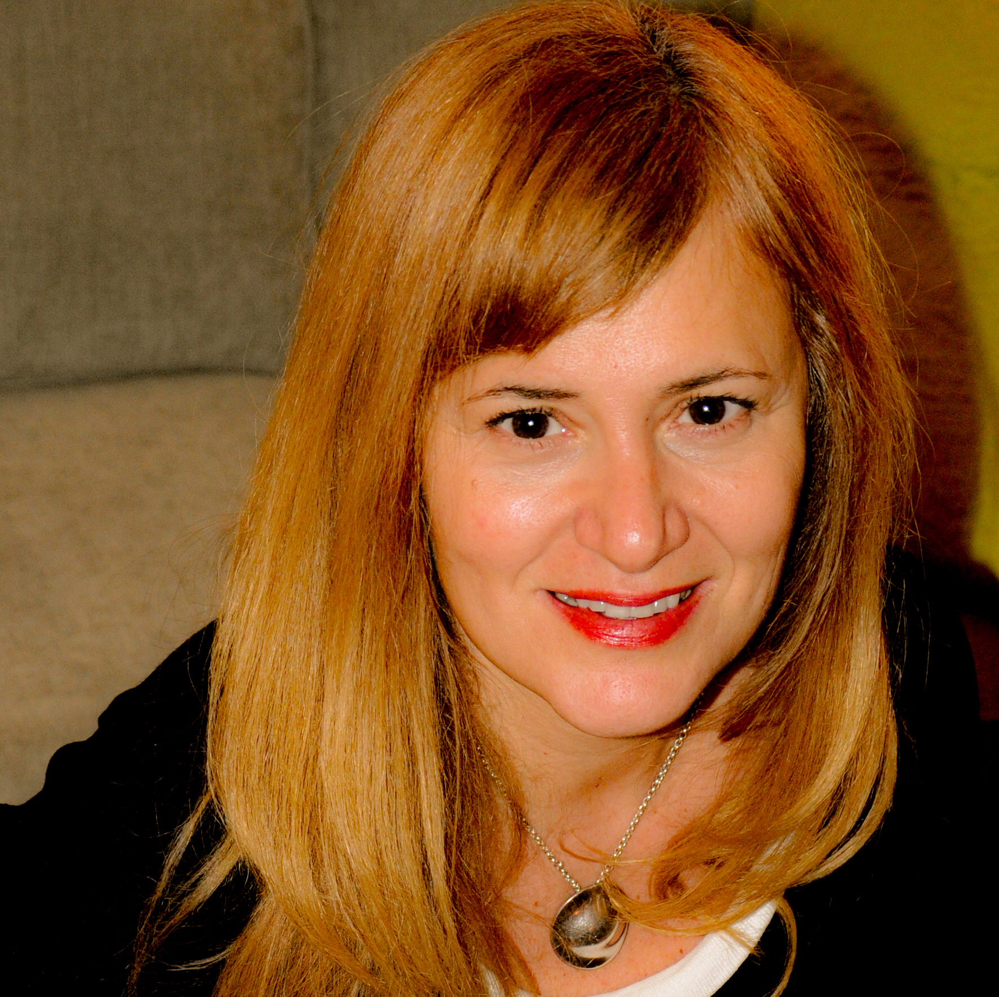
Maria Aiolova • Arup Group
Maria Aiolova is the Americas Arup University Leader, the firm's resource for learning, research, knowledge, and collaboration. She works closely with the leadership of the firm to set and drive the strategic direction of Arup University in the Region. Maria co-founded Terreform ONE where she was responsible for the research, administrative and financial affairs of the organization. There, she created ONE Lab, an experimental school that combines design and science in a singular curriculum. She was the institutional adviser to New Lab and helped raise $33 Million to launch the project. Maria served as the Academic Director of Global Programs at CIEE, where she created semester-long programs in Berlin, Barcelona, Prague, Shanghai, Cape Town and a summer program in New York City. She is an inventor, who holds 18 technology patents. Most recently, Maria created Atlas Corps Tech Fellowship, a special initiative within Atlas Corps, an organization that engages social change leaders from around the world in long-term professional fellowship. Maria lectures and teaches internationally about design principles and emergent practices in the field of design for social and ecological innovation. As a future studies consultant, she focused on assisting organizations to recognize design attitude capabilities as drivers of innovation.
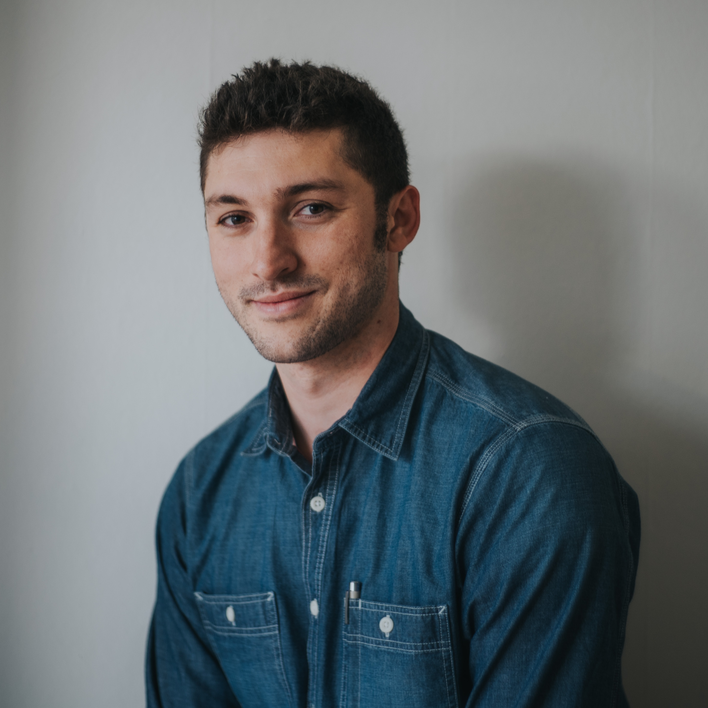
Zachary McCune • Wikimedia
Zachary McCune leads global marketing for Wikimedia. He specializes in cultural collaboration online and authored the first academic study of Instagram at the University of Cambridge in 2011. Working with free knowledge advocates and filmmakers, he has promoted Wikipedia in Iraq, Nigeria, and Mexico. His latest video project features a young Hindi student rediscovering a family secret on Wikipedia. Viewers may cry. It has introduced Wikipedia to more than 5 million new users in India.
Jessie Silver • School of Visual Arts
Jessie Silver loves problem-solving, particularly at the intersection of design and health in resource-limited contexts. Most recently, she completed a graduate thesis on the spatial design of health clinics inside American jails, investigating the impacts of these environments on patients and providers, and facilitating the participatory design of new spaces to improve the quality of healthcare provided therein. Prior to this work, she spent 3 years in Rwanda where she lead the collaborative design and implementation of a new medical record system for the country’s primary referral hospital. She holds an MFA in Design for Social Innovation from SVA, a BS in Nursing from Hopkins, and a BA in Human Biology from the UVA. When she’s not embedded in a health system or working for social justice, you might find her running off to the ocean with a paddle board.
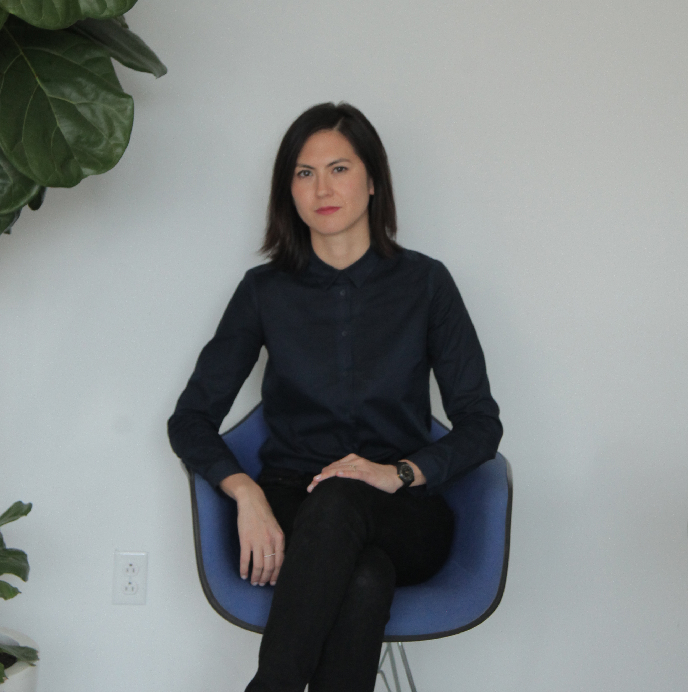
Tei Carpenter • Agency—Agency
Tei Carpenter is an architectural designer, educator and founder of Agency—Agency, an award-winning New York City-based architecture and design studio that seeks out an expanded role for architecture by engaging buildings, objects, interiors, infrastructures, speculations, and environments. She is Adjunct Assistant Professor at Columbia University’s Graduate School of Architecture, Planning and Preservation and Director of the Waste Initiative, an applied research and design platform.
Carpenter’s design and research work has been supported by the New York State Council on the Arts and has been exhibited at the Storefront for Art and Architecture and at the 2016 Venice Biennale. In 2018, Agency—Agency was named one of the New Practices New York by the American Institute of Architects. Recent design work and writing have appeared publications including Architect, The Avery Review, Oculus and RIBA Journal. Previously she has taught at Brown University, Cornell University, City College of New York and at Rice University as the Wortham Visiting Lecturer. Carpenter earned a Bachelor of Arts degree in Philosophy from Brown University and her Master of Architecture degree from Princeton University where she was awarded the Howard Crosby Butler Traveling Fellowship in Architecture.

Sabrina Dorsainvil • City of Boston
Sabrina is fascinated by people: the way they move, speak, touch, interact and experience objects, environments and each other. She brings this lens to her work as a designer and illustrator; from playful drawings to projects centered around the experience of being human, Sabrina’s work aims to improve the practice of everyday life by working to addressing complex issues we face daily within areas like housing and healthcare or social and emotional well being. She has worked with international and local community based organizations, non-profits, large institutions and startups on issues regarding social, spatial and environmental justice. Sabrina currently works for the City of Boston as a Civic Designer with the Mayor’s Office of New Urban Mechanics. She holds a BFA in Industrial Design from Massachusetts College of Art and Design and an MS in Design and Urban Ecologies from Parsons the New School.
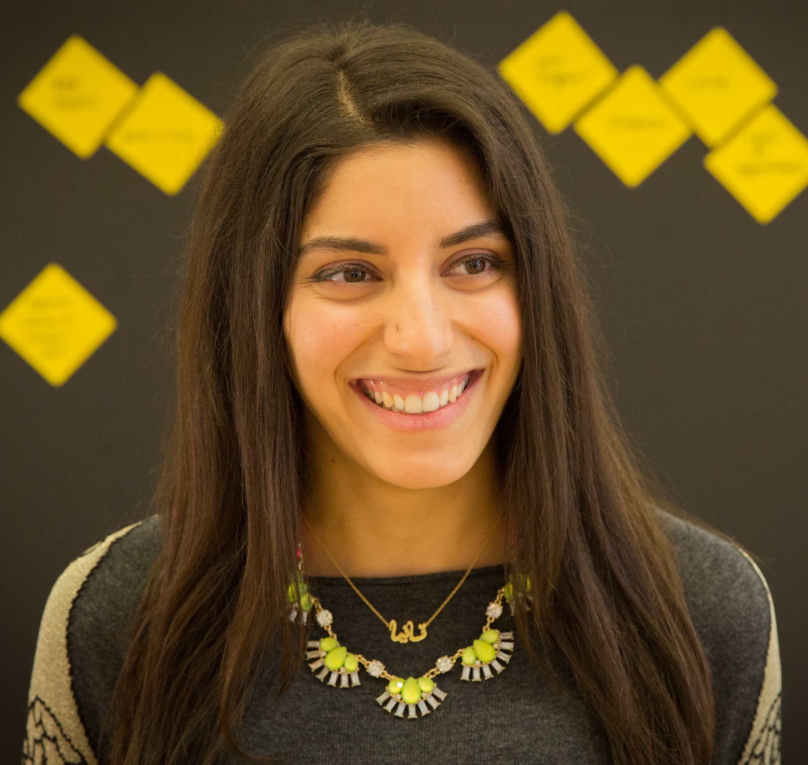
Tania Anaissie • Beytna Design
Tania Anaissie is the Founder and CEO of Beytna Design, an equity-design firm that focuses on issues of inequity in the government, education, and criminal justice systems. She is a Founding Co-creator of the Liberatory Design process, a new practice of human-centered design that accounts for power, historical context, and oppression. Tania advocates for adapting the design field to be equity-centered and is part of advancing the Equity Design movement through her dedication to designing new frameworks and tools as well as her membership in the Equity Design Collaborative. Tania is Faculty at The National Equity Project in Oakland and a former Lecturer at the Stanford University d.school where she taught custom classes, managed programs at Stanford and abroad, and was a strategy designer on the d.school's capstone Stanford 2025 project. Tania is an expert designer and facilitator with over 9 years of experience, leading design teams in research projects across the world and facilitating design learning experiences for over 800 learners. Tania is a graduate of Stanford University's Product Design program and is currently a StartingBloc fellow.
Niki Sanders • Bluecadet
Niki is an associate strategist at Bluecadet, an experience design agency that works with cultural institutions, universities, and mission-driven organizations. There, she helps develop strategies for business development, communications, and client projects. Before Bluecadet, Niki worked at the RISD Museum and the Moth and created multimedia stories that have been featured on Google Arts and Culture, Transom, and Rhode Island Public Radio. Niki graduated magna cum laude from Brown University with degrees in nonfiction writing and art history.
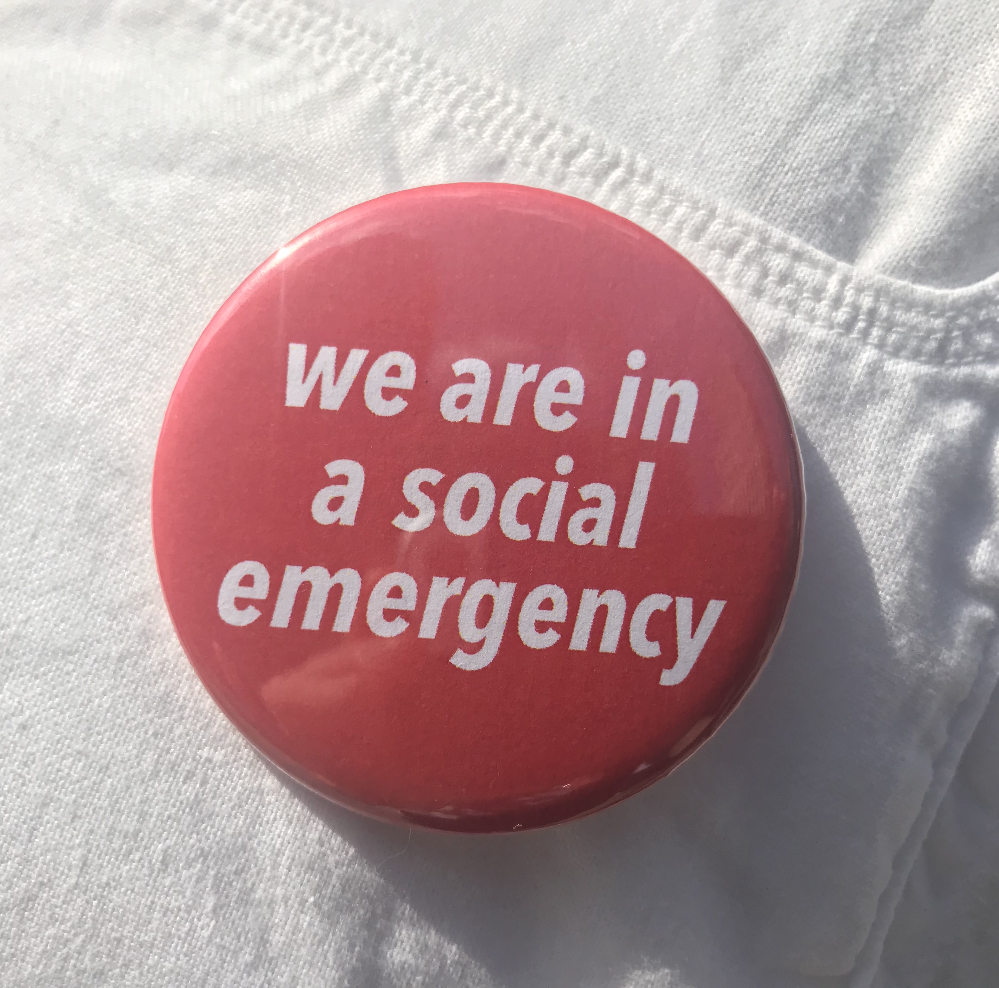
Kenneth Bailey • Design Studio for Social Intervention
Kenneth Bailey is the co-founder of the Design Studio for Social Intervention (ds4si). His interests focus on the research and development of design tools for marginalized communities to address complex social issues. With over three decades of experience in community practice, Kenneth brings a unique perspective on the ethics of design in relation to community engagement, the arts and cultural action. Projects he has produced at ds4si include Action Lab (2012- 2014), Public Kitchen (2011-2018), Social Emergency Response Center (SERC) (2018) and People’s Redevelopment Authority (2018). Kenneth was recently a Visiting Scholar in collaboration with University of Tasmania and also a founding member of Theatrum Mundi NYC with Richard Sennett.

Amanda Finuccio • The School of Visual Arts
Amanda Finuccio is a design researcher and communications designer. Originally from Miami, FL she studied graphic design at North Carolina State University in Raleigh, NC and design for social innovation at The School of Visual Arts in New York City. Her experience includes designing a community-created poetry festival, producing a vegan dinner series to raise money for artists, designing publications for NYC’s Department of Small Business Services, developing a bookmaking program for moms with young daughters who want sexual health education to begin at home, and selling delicious vegetables at the Ft. Greene farmers market in Brooklyn. You can talk to her about community-building, sexual health, agriculture, and tropical fruits.
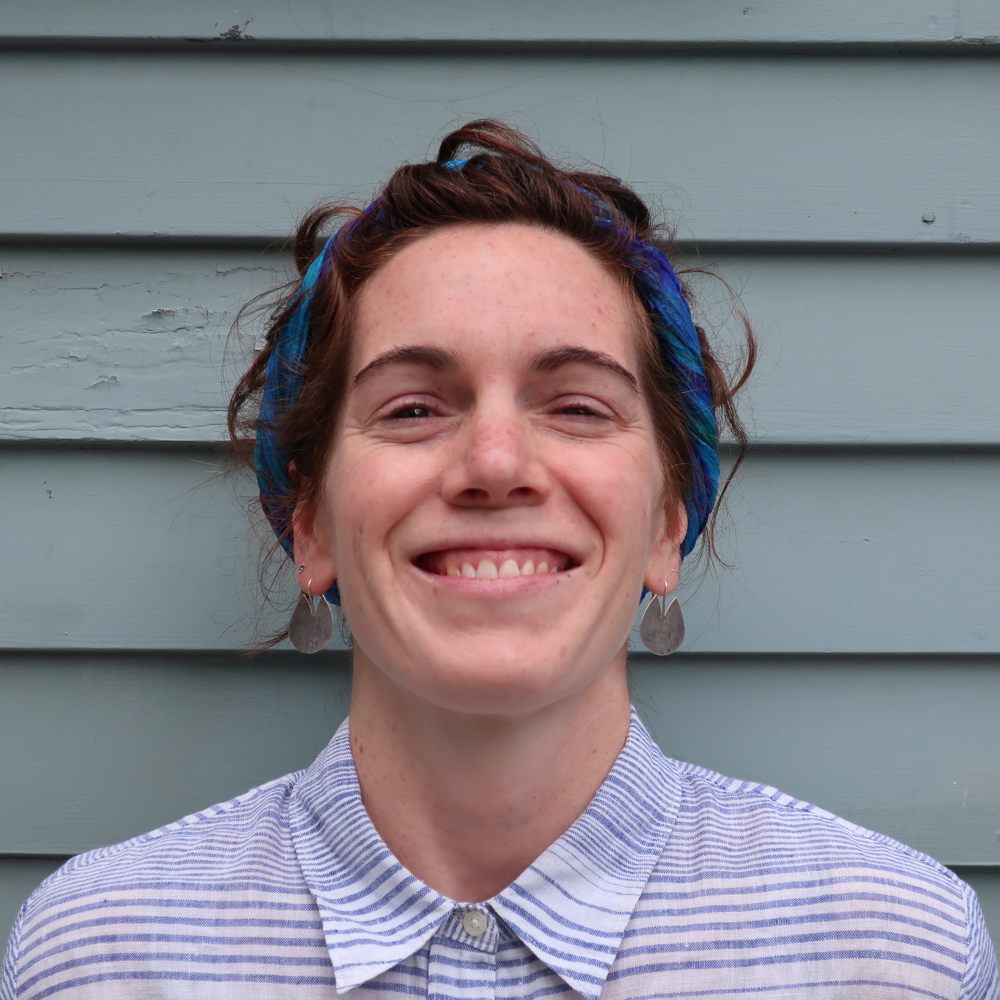
Eliza Squibb • GAIA Vaccine Foundation
Eliza Squibb uses textile design to bridge the worlds of art and science. Through her work with GAIA Vaccine Foundation, a Rhode Island nonprofit with the mission of infectious disease prevention in West Africa, she has created fabric patterns, produced in West Africa and funded by the Bill & Melinda Gates Foundation, that use vivid visual imagery to spread health messaging for women’s reproductive health in Mali and Guinea. Her research on traditional art practices has taken her to Tunisia and the Peruvian Amazon, where she organized design workshops in Yine-Yami, Shuar and Shipibo indigenous communities. Eliza’s latest adventure is co-founding a social enterprise, Z Twist Design, to work with international artists in the design of communication tools for global health. Eliza is honored to spend every Saturday morning with talented teen artists at Project Open Door, where she is an instructor for RISD's college access program.
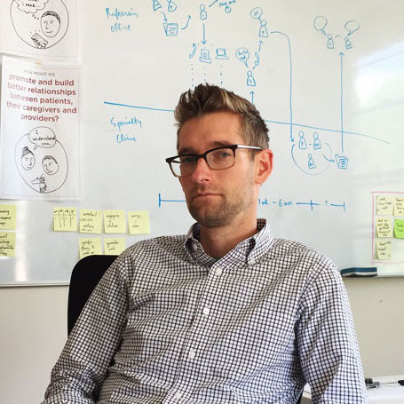
Jeremy Beaudry • hiCOlab
Jeremy Beaudry is Lead Healthcare Experience Designer at hiCOlab, a design and innovation lab embedded in The University of Vermont Medical Center in Burlington. Previously, he was a professor of design and director of the Design for Social Impact masters program at The University of the Arts in Philadelphia. His research and design practice focus on creating collaborative tools and methods with organizations, communities, and leaders in the service of systems-wide change and innovation efforts. He publishes, publicly presents, and leads workshops on the power of participatory design to change organizations and systems from the inside out. After helping a close family member navigate the complexity of healthcare during a serious illness, he was drawn into that world as a place to use his experience and skills as a designer to create more humane healthcare service experiences. Jeremy occasionally writes about design, healthcare, and social impact here.
kHyal
kHyal is an award-winning creative director, marketing executive, designer and writer with extensive experience working with international brands, corporations and agencies in North America, Central America, South America, Europe, Africa and Asia with a focus on technology, healthcare, financial services, arts and culture, fashion, education, non-profit and consumer product verticals. She has worked on significant projects for Datto, Deutsche Bank, Diageo, General Electric, IBM, Aetna, Black&Decker, Blue Buffalo Company, BMW, Pitney Bowes, GAP, UPS, Sharp Electronics, UBS Investment Bank, Whitney Museum of American Art, St. John’s College, Scholastic, Houghton Mifflin Harcourt, McGraw-Hill, Showtime, and Museum of Fine Arts–Boston. Her fine art and design have been exhibited in the American Visionary Art Museum, Pictoplasma–Berlin, New Britain Museum of American Art, la Gaîté Lyrique–Paris, Outsider Art Fair–New York, Housatonic Art Museum, City Museum–Washington–DC, Intuit–Chicago, EGGO Arte—Buenos Aires, Cooper Union, Art Basel—Switzerland, Aqua Art Miami, Satellite Art Show and galleries from New York to Los Angeles, London and France. kHyal was a pioneer in the use of personal computers, MIDI music, performance and installation as an artform. She was a member of the Yale Amiga Users Group, involved in Rhizome (now part of the New Museum), Art & Science Collaborations Inc. (ASCI), and a founding member of the Women’s Internet History Project while simultaneously exhibiting work in early editions of the Outsider Art Fair. A cross-disciplinary practitioner, kHyal was first commissioned to create street art by galleries in Los Angeles in 1985. She has used design as an experimental art form and a means to process life since the early 80s.
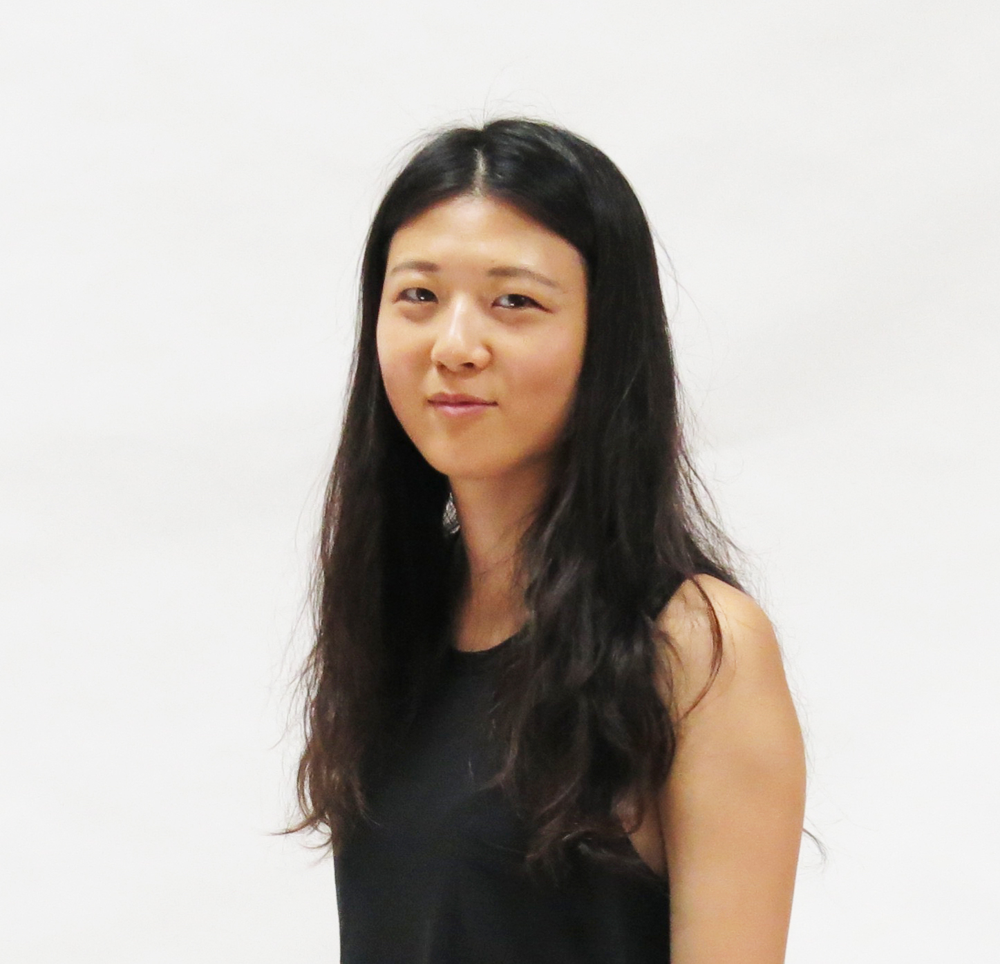
Lilian Tong • Matter-Mind Studio
Lillian Tong is a hybrid strategist and service designer. She creates poetic rituals that support self-inquiry, inspire meaningful connection and foster organizational change. Lillian is also a Partner and Cofounder at Matter-Mind Studio, a consultancy and research lab that practices Emotion-Centered Design. By working with people to articulate their inner needs, Matter-Mind helps organizations, institutions, and companies to take better care of their customers and employees.
Mari Nakano • NYC Mayor’s Office for Economic Opportunity
Mari Nakano has an obsession with problem solving through the lens of design. She has been practicing what design can do for products, services and teams in the social impact space for over 12 years and has worked with notables such as the United Nations Population Fund, Women Deliver, PepsiCo and Design Continuum. Prior to joining the New York City Mayor’s Office as Deputy Director for Design, she served for 4 years as the Design & Interaction Lead for UNICEF’s Office of Innovation where she orchestrated the production and execution of designed materials and processes across a multi-disciplinary global team of innovators focused on developing forward thinking solutions to improve the lives of children around the world. She is the recipient of the 2015 ArtCenter Young Innovator Alumni Award and a contributor to the award-winning LEAP Dialogues: Career Pathways in Design for Social Innovation. She loves cooking and beaches and has loved the Golden State Warriors since the days of Chris Mullin and Tim Hardaway.
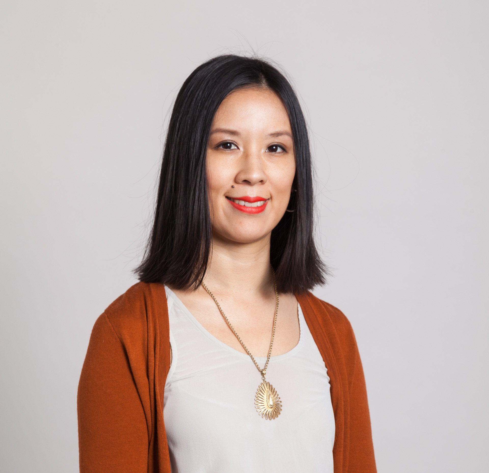
Nikki Chung • Once–Future Office
Nikki Chung is a creative director and partner at Once–Future Office, an award-winning design studio in NYC working with civic, cultural, and mission-driven organizations to tell stories, connect and engage communities, and clarify complex information at all scales. At Once–Future Office, Nikki has led projects for clients including AIGA/NY, the NYC Department of Health and Mental Hygiene, the Mash-Up Americans, Storefront for Art and Architecture, and the Fund for Public Health. She has lectured and taught at Rhode Island School of Design, the School of Visual Arts, and the California College of the Arts. Nikki serves on committees for The Center for Urban Pedagogy (CUP), Van Alen Institute, and Greene Hill Food Co-op, and on the advisory board to the Historic Districts Council.
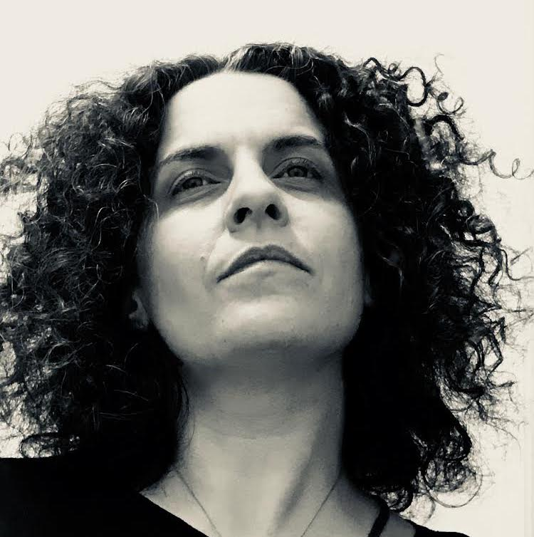
Stina Hamlin • State of Mind Media
Stina Hamlin, co-founder of STATE of Mind Media & Director of Post Production at East Coast Digital, Inc., is an award-winning VR creator and television producer who has worked with organizations including UNICEF, Doctors Without Borders, USA Today and Scripps Networks. Her focus is concentrating on projects that amplify Indigenous voices and creating media that educates and supports in the fight to protect the water and Mother Earth. Currently she is working on XR project, Blood Memory: The Experience, and is a new member of the 2018-2019 cohort at New Inc. in New York City.
José Eduardo Sánchez • Tecolotl
José Eduardo Sánchez is committed to the long haul struggle for racial and economic justice and specializes in creating, deconstructing, and transforming physical and social space. He has extensive experience in grassroots organizing, anti-capitalist and anti-racist political education, and nonprofit strategic, sustainable management as well as a successful record of campaign strategy and coalition-building at the local, regional, and national levels. José Eduardo has been trained in popular education, participatory action research, and language justice over the past several years at the Highlander Center, and has developed his political identity through his experience as a queer Latino immigrant growing up in a working class family and organizing with low-wage, immigrant workers in Houston since 2009. He is a worker co-owner of his recently founded project, Tecolotl, which focuses on feeding the movement by providing grassroots strategy and facilitation consulting and experimenting with the re/creation of stories through food and space. He's also a member of Antena Houston, a collective dedicated to language justice advocacy and organizing locally in Houston. José Eduardo lives in the (not-near) Northside of Houston and is an avid baker, cook, and current culinary arts student.

Danielle Trofe • Danielle Trofe Design
Founder of Danielle Trofe Design, a Brooklyn-based design studio that creates innovative solutions at the intersection of science, technology and design, Danielle aims to encourage a departure from conventional materials and production techniques in search of long-term, sustainable solutions. Launched in early 2014, the MushLume Lighting Collection has received international awards and been one of the first biofabricated goods to prove viability in both retail and commercial markets within the lighting industry. Danielle has a Master’s degree in Design as well as a Master’s in Biomimicry and teaches a Biodesign studio course at the Pratt Institute. Her work has been featured at the Design Museum in London, the Brooklyn and U.S. Botanic Gardens, in Bryant Park for BMW’s electric car world tour, as well as many hotels, restaurants and public spaces, such as the 1 Hotel Brooklyn Bridge, Blue Park Kitchen and Hotel Indigo.
Jillian Hammer • Bluecadet
Jillian is a designer at Bluecadet, where her role spans from traditional web & application design to experiential exhibition design. Her work is informed by her background in community organizing and activism, as she formerly served on the National Board of the East Coast Asian American Student Union, and as the President of the Temple University Asian Students Association. Jillian graduated magna cum laude from Temple University with a BFA in Graphic and Interactive Design.
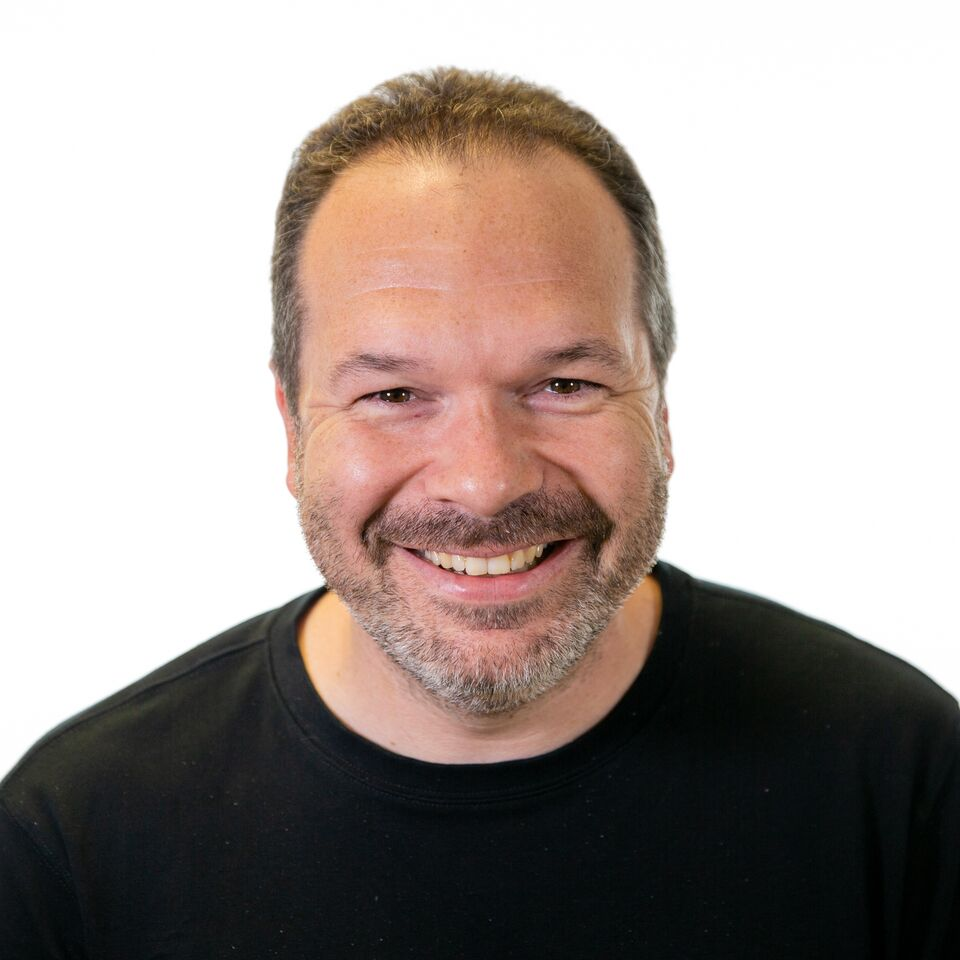
Juhan Sonin • MIT, GoInvo
Juhan Sonin specializes in healthcare design and system engineering. He is the director of GoInvo (goinvo.com). The studio’s designs help 700,000 Massachusetts residents receive food stamps, are used by Wikipedia to explain complex health concepts, and manage care plans for 150 million United Statesians. His work has been recognized by the New York Times, Newsweek, BBC International, Wired Magazine, and National Public Radio (NPR) and published in The Journal of Participatory Medicine and The Lancet. Juhan has spent time at Apple, the National Center for Supercomputing Applications (NCSA), Massachusetts Institute of Technology (MIT) and MITRE. He currently lectures on design and engineering at MIT. Juhan’s laser focus on healthcare and open source design has infected national efforts for the United States Department of Health and Human Services (HHS) to the National Institutes of Health (NIH) to the California Healthcare Foundation (CHCF) to the Office of the National Coordinator for Health Information Technology (ONC). His open source healthcare products have also been leveraged by Walgreens, Crossover Health, and Hallmark Clinics, to name a few. Next up in 2019 is designing an open source primary care health receipt, an open source oncology voice and story-based data collection service, as well as care team and precision medicine services.
Kathryn A. Potts • Whitney Museum of American Art
Kathryn A. Potts is the Associate Director, Helena Rubinstein Chair of Education at the Whitney Museum of American Art. Ms. Potts has been a member of the Whitney’s staff since 1997. In her position, she directs public programs, access and community programs as well as education programs for school, youth, and family audiences. She oversees Museum interpretive programming, online learning initiatives, as well as program evaluation and assessment. She is part of the Museum’s senior management team, co-chair of the Museum’s Equity and Inclusion Task Force as well as one of the co-chairs of the Whitney’s Audiences Strategic Planning Group. She was the lead for the Education Department’s planning for the Whitney’s new downtown building which opened in Manhattan’s Meatpacking District in May of 2015. Ms. Potts has an M.A. from the Williams College Graduate Program in the History of Art and a B.A. from Brandeis University.
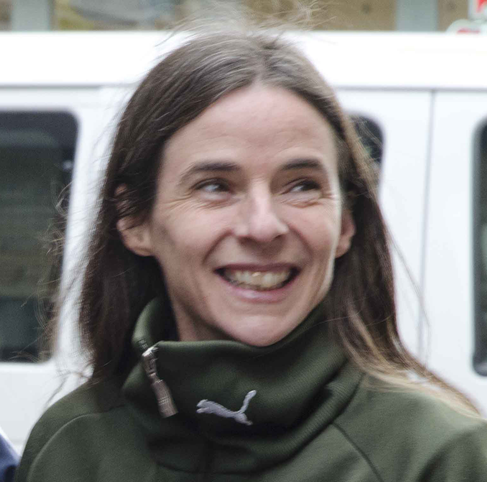
Lori Lobenstine • Design Studio for Social Intervention
Lori Lobenstine is the Program Design Lead and Co-Founder of the Design Studio for Social Intervention (DS4SI). She grew up in a family of community and union organizers, and decided early on that working with youth was her passion and her route to creating change, including in settings as diverse as classrooms, basketball courts, museums and foreign countries. Throughout these experiences, she has struggled with the challenges of creating new designs with youth, in fields that are often top-heavy and funding-driven. As a life-long activist, she is inspired by the vision that new design tools and a greater design awareness will bring new energy and power to our work. Her published works in print include Girls Got Kicks (Levellers Press, 2011) and All About the Girl: Culture, Politics and Identity (Editor, Harris; Routledge,2004).
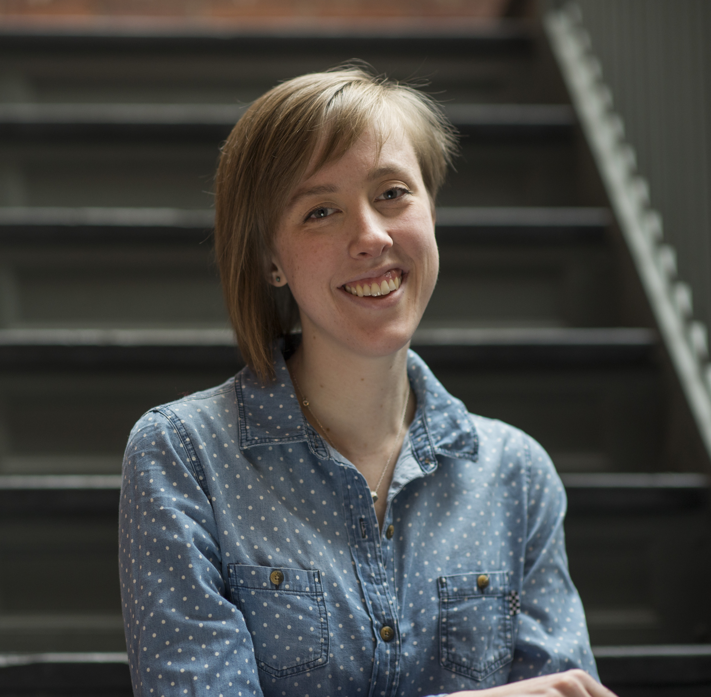
Samantha Dempsey • Independent Human-Centered Design Consultant
Samantha is a human-centered designer committed to improving health equity through co-design with communities. She deeply believes that people with lived experience are essential partners and leaders in the design practice, particularly in systems like healthcare where historical trauma, inequities, and power imbalances have negatively impacted communities for generations. Her approach blends co-design, narrative, and visual storytelling to explore relationships and facilitate collaboration. Samantha’s experience includes designing equity-centered services and products as a Senior Human-Centered Designer at Hennepin Healthcare System’s Upstream Health Innovations, crafting patient experiences and communication tools at the Mayo Clinic Center for Innovation as a Maharam STEAM Fellow, and exploring the intersection of health and technology as a Senior Behavior Change Designer at Mad*Pow. Samantha has also served as the co-curator of the Designer's Oath. She speaks and writes about the intersection of design, ethics, and equity and holds a BFA from the Rhode Island School of Design. When she is not designing, Samantha enjoys embroidering patterns of bacteria onto household objects.
Ashley Eberhart • MICA Center for Social Design
Ashley K. Eberhart uses human-centered design to elevate community expertise, honor patient stories, and build an equitable healthcare system that works for everyone. She is currently an adjunct faculty member at the Maryland Institute College of Art (MICA) Center for Social Design and a design fellow at the Johns Hopkins Center for Innovative Care in Aging, where she develops tools to promote a supportive culture for seniors that prioritizes their autonomy and goals. An advocate for design ethics, she strives to uphold, teach, and spread the Design Justice Network Principles in her creative practice. Formerly, as a project manager at Dalberg, Ashley led strategy and design teams in Nigeria, Ethiopia, and India to center the experiences of women in decisions about reproductive health and wellbeing. Ashley holds an A.B. in Politics from Princeton University and an M.A. in Social Design from MICA. Her work in design for public health has been featured in Forbes, Ozy, and Bitch Media. She is a Udall Scholar, StartingBloc Fellow, and self-proclaimed Amtrak nomad, splitting her time between Brooklyn and Baltimore.
Grace Knight • Ecovative Design
Grace Knight is a Industrial Designer, Woodworker, and Product Fabricator for the mycelium biotech company Ecovative Design. As an undergraduate at the Rhode Island School of Design, she sought a balance between biology and design in her education, and challenged herself to use only recyclable and biodegradable materials in her practice. She was awarded the Yousef Karsh Student of Design Science Award in 2016 at the Design Science Symposium and the Rachel Carson Award in 2018. At Ecovative, Grace works on the Core research team where she builds using Mycofoam panels, the largest mycelium composites available in the world. Ecovative strives to provide consumers with non-toxic, sustainable materials without sacrificing cost or performance, and Grace works to showcase the endless industry applications utilizing structural mycelium composites. Recently she’s had success growing stairs in wooden molds for DARPA’s 60th Anniversary in Washington D.C. and fabricating the set design for the upcoming Synbiobeta 2018 Conference in San Francisco.
Better World by Design
Providence, Rhode Island
hello@betterworldxdesign.com